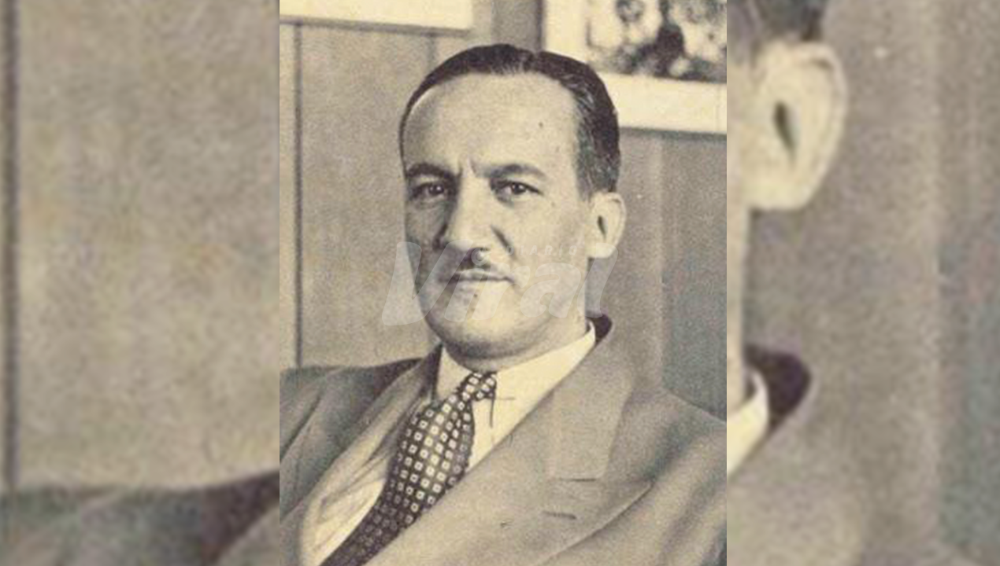

Manuel Seoane Corrales: político, empresario y dirigente deportivo peruano
Manuel Seoane Corrales (Lima, 1900 – 1965) fue un destacado político, economista, empresario y dirigente futbolístico peruano. Ocupó el cargo de Vicepresidente de la República durante el gobierno del general Manuel A. Odría (1950-1956), además de desempeñarse como Ministro de Hacienda y Comercio. Como dirigente deportivo, fue presidente del Club Universitario de Deportes en varias etapas y vicepresidente de la Confederación Sudamericana de Fútbol (Conmebol). También tuvo una activa participación en la organización de torneos internacionales y en la promoción del fútbol profesional en Perú.